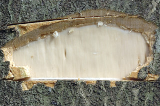
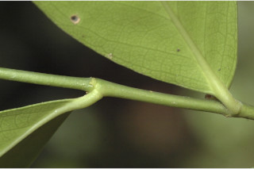
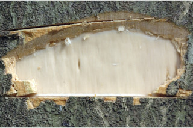
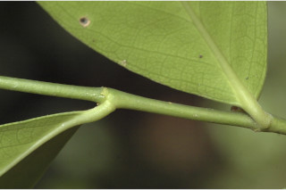
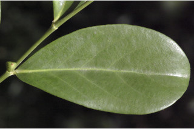
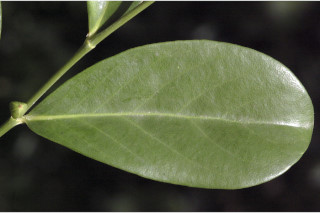
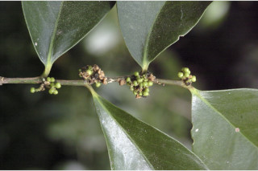
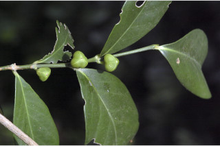
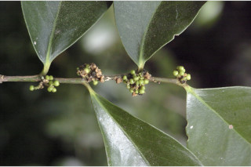
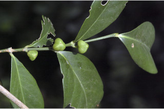

Trees up to 6 m tall.
6 ಮೀ. ಎತ್ತರದವರೆಗೆ ಬೆಳೆಯುವ ಮರಗಳು.
6 മീറ്റര് വരെഉയരമുളള മരങ്ങള്.
மரங்கள், 6 மீ. உயரம் வரை வளரக்கூடியது
Bark grey, smooth; blaze cream.
ತೊಗಟೆ ಬೂದು ಬಣ್ಣದಲ್ಲಿದ್ದು ನಯವಾಗಿರುತ್ತದೆ; ಕಚ್ಚು ಮಾಡಿದ ಜಾಗ ಕೆನೆ ಬಣ್ಣದಲ್ಲಿರುತ್ತದೆ.
മിനുസമുളള, ചാര നിറത്തിലുളള പുറംതൊലി; വെട്ടുപാടിന് ക്രീം നിറമാണ്.
மரத்தின் பட்டை சாம்பல் நிறமானது, வழுவழுப்பானது; உள்பட்டை கிரீம் நிறமானது.
Branchlets terete, glabrous.
ಕಿರುಕೊಂಬೆಗಳು ದುಂಡಾಗಿದ್ದು ರೋಮರಹಿತವಾಗಿರುತ್ತವೆ.
അരോമിലമായ, ഉരുണ്ട ഉപശാഖകള്.
சிறிய நுனிக்கிளைகள் குறுக்குவெட்டுத் தோற்றத்தில் வளையமானது, உரோமங்களற்றது.
Leaves simple, alternate, spiral; stipules caducous; petiole 0.3-0.5 cm long, planoconvex in cross section, glabrous; lamina 3.5-10.2 x 2-4 cm, obovate or oblanceolate, apex obtuse, base cuneate, sometimes asymmetric; midrib flat above; secondary_nerves ca. 6 pairs, not prominent; tertiary_nerves obscure.
ಎಲೆಗಳು ಸರಳವಾಗಿದ್ದು ಪರ್ಯಾಯ ಮತ್ತು ಸುತ್ತು ಜೋಡನಾ ವ್ಯವಸ್ಥೆಯಲ್ಲಿರುತ್ತವೆ; ಕಾವಿನೆಲೆಗಳು ಉದುರಿ ಹೋಗುವಂತವು; ತೊಟ್ಟುಗಳು 0.3-0.5 ಸೆಂ.ಮೀ.ಉದ್ದವಿದ್ದು ಅಡ್ಡ ಸೀಳಿದಾಗ ಸಪಾಟ ಪೀನ ಮಧ್ಯದ ಆಕಾರದಲ್ಲಿರುತ್ತವೆ ಮತ್ತು ರೋಮರಹಿತವಾಗಿರುತ್ತವೆ ; ಪತ್ರಗಳು 3.5 -10.2 X 2-4 ಸೆಂ. ಮೀ. ಗಾತ್ರದಲ್ಲಿದ್ದು,ಬುಗುರಿ ಅಥವಾ ಬುಗುರಿ-ಭರ್ಜಿಯ ಆಕಾರ ಹೊಂದಿರುತ್ತವೆ; ಪತ್ರಗಳು ಚೂಪಲ್ಲದ ಮಾದರಿಯ ತುದಿ ಹೊಂದಿರುತ್ತವೆ ,ಬುಡ ಬೆಣೆಯಾಕಾರದ ಮಾದರಿಯಲ್ಲಿರುತ್ತದೆ ಕೆಲವು ವೇಳೆ ಅಸಮವಾಗಿರುತ್ತದೆ;ಪತ್ರದ ಮೇಲ್ಭಾಗದಲ್ಲಿ ಮಧ್ಯ ನಾಳ ಚಪ್ಪಟೆಯಾಗಿರುತ್ತದೆ; ಎರಡನೇ ದರ್ಜೆಯ ನಾಳಗಳು ಅಂದಾಜು 6 ಜೋಡಿಗಳಿರುತ್ತವೆ ಮತ್ತು ಅಪ್ರಮುಖವಾಗಿರುತ್ತವೆ; ಮೂರನೇ ದರ್ಜೆಯ ನಾಳಗಳು ಅಸ್ಪಷ್ಟವಾಗಿರುತ್ತವೆ.
ലഘുവായ ഇലകള്, ഏകാന്തരക്രമത്തില് സര്പ്പിളമായാണ് അടുക്കിയിരിക്കുന്നത് അനുപര്ണ്ണങ്ങള് എളുപ്പം ഇളകി വീഴുന്നതാണ്; ഛേദത്തില് ഒരുഭാഗം പരന്നും മറുഭാഗം ഉരുണ്ടുമിരിക്കുന്ന ഘടനയുളള അരോമിലമായ ഇലഞെട്ടിന് 0.3 സെ.മീ മുതല് 0.5 സെ.മീ വരെ നീളം; പത്രഫലകത്തിന് 3 സെ.മീ മുതല് 10.2 സെ.മീ വരെ നീളവും 2 സെ.മീ മുതല് 4 സെ.മീ വരെ വീതിയും, ആകൃതി അപണ്ഡാകാരമോ അപകുന്താകാരമോ ആവാം, പത്രാഗ്രം ഉപകോണാകാരത്തിലാണ്, പത്രാധാരം ആപ്പാകാരത്തിലാണ്, ചിലപ്പോള് അസമമാണ്; മുഖ്യസിര മുകളില് പരന്നതാണ്; എറെ വ്യക്തമല്ലാത്ത ഏതാണ്ട് 6 ജോഡി ദ്വിതീയ ഞരമ്പുകളുണ്ട്; ത്രിതീയ ഞരമ്പുകള് അപ്രസക്തമാണ്.
இலைகள் தனித்தவை, மாற்றுஅடுக்கமானவை, சுழல் போல் அமைந்தது; இலையடிச்செதில் எளிதில் உதிரக்கூடியது; இலைக்காம்பு 0.3-0.5 செ.மீ. நீளமானது, குறுக்குவெட்டுத் தோற்றத்தில் பிளேனோகான்வக்ஸ், உரோமங்களற்றது; இலை அலகு 3.5-10.2 X 2-4 செ.மீ., தலைகீழ் முட்டை அல்லது தலைகீழ் ஈட்டி வடிவானது, அலகின் நுனி மொட்டையானது, அலகின் தளம் ஆப்பு வடிவானது, சிலசமயங்களில் சமமற்றது; மையநரம்பு மேற்பரப்பில் அலகின் பரப்பிற்கு சமமானது; இரண்டாம் நிலை நரம்புகள் 6 ஜோடிகள், தெளிவற்றது; மூன்றாம் நிலை நரம்புகள் தெளிவற்றவை.
Flowers unisexual, dioecious; male flowers small in axillary fascicles; female flowers solitary, axillary.
ಹೂಗಳು ಏಕಲಿಂಗಿಗಳಾಗಿದ್ದು ಗಂಡು ಮತ್ತು ಹೆಣ್ಣು ಹೂಗಳು ಪ್ರತ್ಯೇಕ ಸಸ್ಯಗಳಲ್ಲಿರುತ್ತವೆ; ಗಂಡು ಹೂಗಳು ಸಣ್ಣ ಗಾತ್ರ ಹೊಂದಿರುತ್ತವೆ ಮತ್ತು ಅಕ್ಷಾಕಂಕುಳಿನಲ್ಲಿನ ಗುಚ್ಛಗಳಲ್ಲಿರುತ್ತವೆ; ಹೆಣ್ಣು ಹೂಗಳು ಒಂಟಿಯಾಗಿದ್ದು ಅಕ್ಷಾಕಂಕುಳಿನಲ್ಲಿರುತ್ತವೆ.
പൂക്കള് ഏകലിംഗികളാണ്, ഡയീഷ്യസും; ചെറിയ ആണ്പൂക്കള് കക്ഷീയ കൂട്ടങ്ങളിലുണ്ടാകുന്നു; പെണ്പൂക്കള് ഒറ്റയായി കക്ഷങ്ങളിലുണ്ടാകുന്നു.
மலர்கள் ஒர்பாலானவை, ஈரகம் கொண்டவை; ஆண்மலர்கள் சிறியவை, இலைக்கோணங்களில் தொகுப்பாகமைந்தவை; பெண்மலர்கள் தனித்தவை, இலைக்கோணங்களில் அமைந்தவை.
Capsule, smooth, deeply lobed, keeled on the lobes, 0.6 cm in diameter; seeds 1 per lobe.
ಸಂಪುಟ ಫಲಗಳು 0.6 ಸೆಂ.ಮೀ. ವ್ಯಾಸ ಹೊಂದಿದ್ದು ನಯವಾಗಿರುತ್ತವೆ ಮತ್ತು ಆಳವಾದ ಹಾಲೆಗಳನ್ನೊಳಗೊಂಡಿರುತ್ತವೆ ಮತ್ತು ಹಾಲೆಗಳು ಬಿಲ್ಲಿನ ತುದಿಯಾಕಾರದ ರಚನೆಯನ್ನು ಹೊಂದಿರುತ್ತವೆ;ಪ್ರತಿ ಹಾಲೆಯಲ್ಲಿ ಒಂದು ಬೀಜವಿರುತ್ತದೆ.
ഓരോ അറയിലും ഓരോ വിത്തുവീതമുളള കായ, വരമ്പുകളുളള, ആഴത്തില് കര്ണ്ണിതമായതും. 0.6 സെ.മീ വ്യാസമുളളതുമായ മിനുസമുളള കാപ്സ്യൂള് ആണ്.
வெடிகனி (கேப்சூல்), வழுவழுப்பானது, 3 அறைகளுடையது, 0.6 செ.மீ. குறுக்களவுடையது; அறைக்கு ஓர் விதையுடையது.
 



 

 


